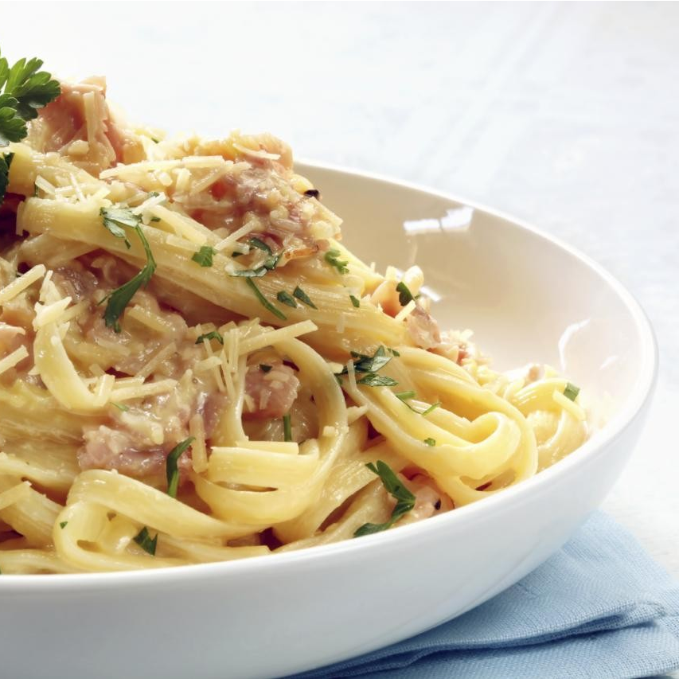
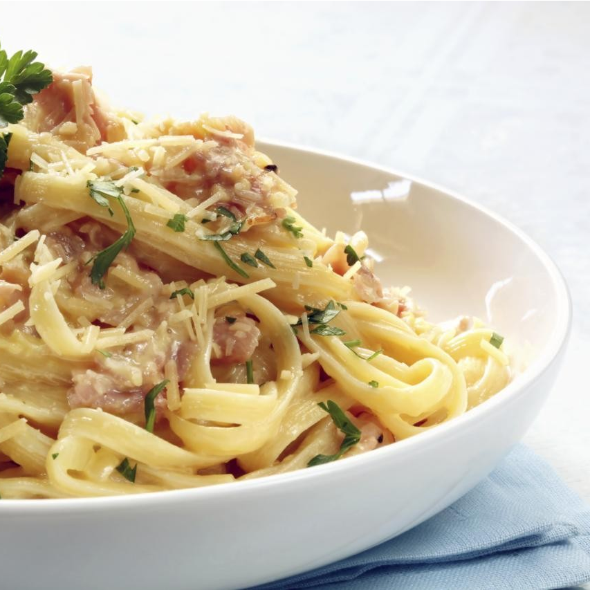

The Fork é uma plataforma on-line que oferece uma ampla variedade de receitas deliciosas e saudáveis para todos os gostos e estilos de vida. Desde pratos rápidos e fáceis até receitas elaboradas para ocasiões especiais, nosso site tem tudo o que você precisa para preparar refeições incríveis para sua família e amigos. Com recursos interativos como avaliações de usuários, opções de pesquisa por tipo de prato, ingrediente e dieta, você pode encontrar facilmente a receita perfeita para suas necessidades. Além disso, nosso site também oferece dicas úteis de cozinha e técnicas de preparação para ajudar a aprimorar suas habilidades culinárias e transformar suas refeições em uma experiência incrível.